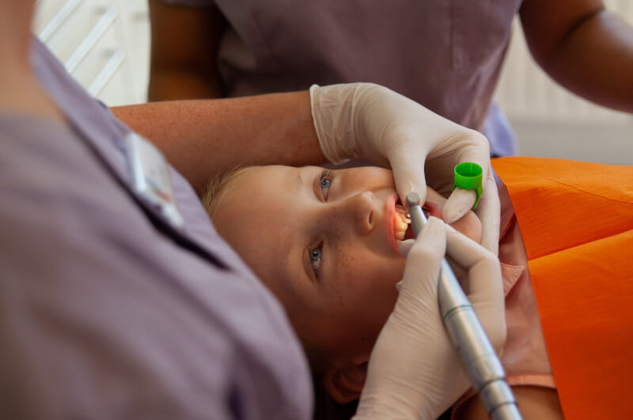

Kontrolle & Vorsorge
Wir sehen Ihr Kind gern ab dem ersten Zahn – danach mindestens alle sechs Monate. So lernt Ihr Kind die Praxis und die Abläufe ganz entspannt kennen, und Sie bekommen Tipps für die Zahnpflege zu Hause.

Das gesamte Spektrum der Kinder- und Jugendzahnheilkunde – nach den Leitlinien der Deutschen Gesellschaft für Kinderzahnheilkunde.
Wir sehen Ihr Kind gern ab dem ersten Zahn – danach mindestens alle sechs Monate. So lernt Ihr Kind die Praxis und die Abläufe ganz entspannt kennen, und Sie bekommen Tipps für die Zahnpflege zu Hause.
Von Anfang an bauen wir Vertrauen zwischen Ihrem Kind und der Zahnärztin auf. Mit kindgerechter Sprache und in freundlicher Atmosphäre wird der Besuch stressfrei und positiv.
Gründliche Zahnpflege will gelernt sein. In der individuellen Prophylaxe zeigen wir die richtige Putztechnik und stärken die Zähne – nach unserem Motto: Vorsorge statt Nachsorge. Bei empfindlichen Zähnen behandeln wir auch desensibilisierend.
Die feinen Grübchen der Backenzähne versiegeln wir mit einem dünnfließenden Kunststoff. So können Bakterien und schädliche Stoffe nicht eindringen – ein wirksamer Schutz vor Karies.
Für Milchzähne und bleibende Zähne stehen verschiedene Füllungsmaterialien zur Verfügung. Welches am besten zu Ihrem Kind passt, entscheiden wir gemeinsam nach einer ausführlichen Beratung.
Ist der Nerv eines Milchzahns entzündet, kann eine Wurzelkanalbehandlung den bleibenden Zahn darunter vor Schäden bewahren. Danach bekommt der Zahn eine individuell angepasste Kinderkrone.
Eine Kinderkrone erhält einen stark zerstörten Milchzahn als Platzhalter. Sie wird in der Größe angepasst und fällt mit dem Milchzahn aus, wenn der bleibende Zahn kommt.
Bei der Molaren-Inzisiven-Hypomineralisation ist der Zahnschmelz gestört gebildet, mit oder ohne Verlust von Zahnsubstanz. Wir behandeln individuell – am wichtigsten sind aber frühe Vorbeugung und engmaschige Kontrollen von Anfang an.
Unser digitales Röntgen arbeitet mit deutlich weniger Strahlung als herkömmliche Geräte und liefert detaillierte Bilder für eine genaue Behandlungsplanung.
Lachgas hilft ängstlichen Kindern, sich während der Behandlung zu entspannen. Wir überwachen die Dosierung genau – so werden Schmerzen gelindert und Angst genommen.
Für umfangreiche Behandlungen bieten wir Narkose an. Speziell geschultes Personal überwacht Ihr Kind dabei durchgehend. Beim Einschlafen und Aufwachen dürfen Sie dabei sein.
Gehen Frontzähne früh verloren, setzen wir einen festsitzenden oder herausnehmbaren Lückenhalter ein, individuell im Labor gefertigt und farblich angepasst. Fehlt früh ein Milchbackenzahn, hält ein Platzhalter die Lücke frei, damit der bleibende Zahn richtig durchbrechen kann.

Bei uns lernen Kinder die Zahnpflege spielerisch kennen. Je früher und regelmäßiger sie kommen, desto entspannter wird jeder Besuch – und desto seltener braucht es eine Behandlung.
Ob Prophylaxe, Versiegelung oder Füllung: Wir erklären jeden Schritt kindgerecht und nehmen uns Zeit, damit sich Ihr Kind sicher fühlt.
